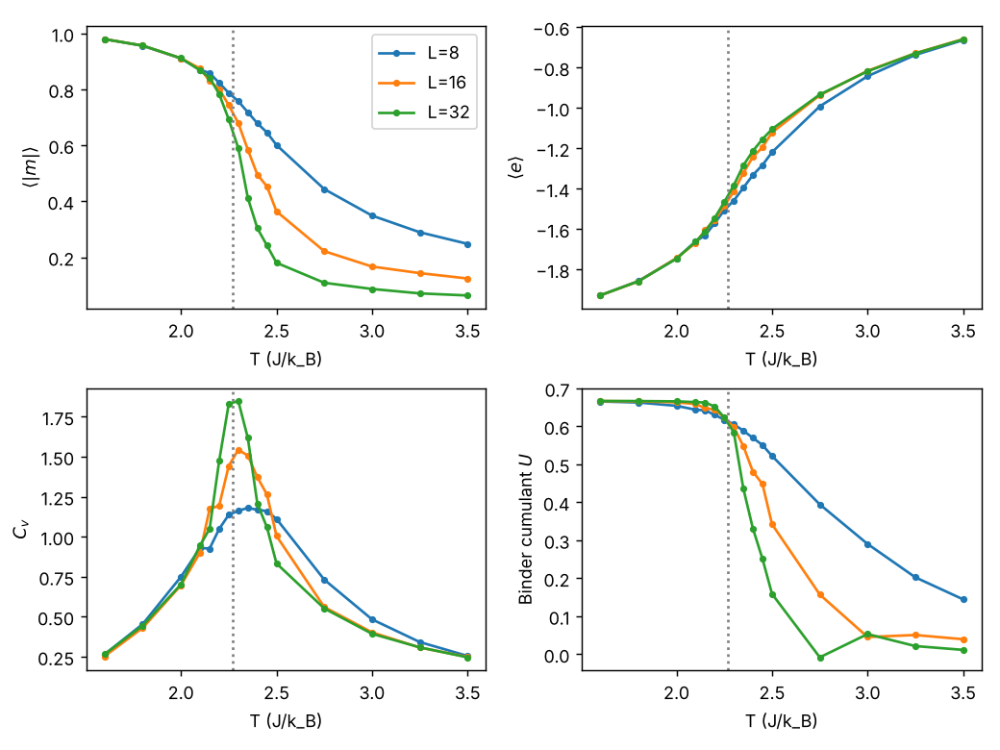
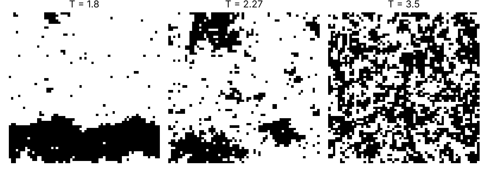

Curriculum/Computational labsLAB 504
Lab: Monte Carlo of the Ising model
Monte Carlo (MC) is the other great simulation method besides molecular dynamics: instead of integrating the equations of motion it samples configurations with the Boltzmann probability. The 2D Ising model is the standard test case because it has an exact solution (Onsager, 1944), so you can verify your code number by number. This lab writes the Metropolis algorithm in 25 lines of Python, runs it for lattices of $8^2$ to $64^2$ spins, and uses it to learn the practical points of MC: equilibration, finite-size effects, the Binder cumulant, critical slowing down and error bars. The whole lab runs in about two and a half minutes on one core.
- Reading time
- about 21 min
- Leads to
- —
- Level
- Graduate: simulation methods
- Implement the Metropolis algorithm for a lattice model and justify every line from detailed balance.
- Validate a simulation against an exact solution.
- Measure energy, magnetisation, specific heat, susceptibility and Binder cumulant, and locate a phase transition from finite-size data.
- Measure an autocorrelation time and compute an honest statistical error.
- Recognise metastable states and other traps (quench into stripes, too short runs, compilation seeds).
Step 1. The model and the algorithm#
Each site $i$ of an $L\times L$ square lattice with periodic boundaries carries a spin $s_i=\pm1$. The energy is $H=-J\sum_{\langle ij\rangle}s_is_j$ over nearest-neighbour pairs, and we choose $J=k_\mathrm B=1$, so temperatures are in units of $J/k_\mathrm B$. At low $T$ the spins align (ferromagnet, $|m|\to1$, $e=H/N\to-2$); at high $T$ they are random ($m\to0$, $e\to0$). In between is a continuous transition at the exact critical temperature $$T_c=\frac{2}{\ln(1+\sqrt2)}=2.2692.$$ The Metropolis algorithm generates a Markov chain whose stationary distribution is the Boltzmann distribution $P(\mathbf s)\propto e^{-H/T}$ (CMS 503). Each step: (1) choose a site at random; (2) compute the energy change $\Delta E$ if its spin were flipped; (3) accept the flip with probability $\min(1,e^{-\Delta E/T})$, otherwise keep the old state. This satisfies detailed balance because the proposal is symmetric. For a spin with neighbour sum $\Sigma$, the flip changes the energy by $\Delta E=2s_i\Sigma$, which can only take the values $-8,-4,0,4,8$, so the cheap integer arithmetic is the whole cost. A sweep is $L^2$ attempted flips, so that every spin is visited once on average; we measure after each sweep.
Step 2. Install and write the code#
Python loops are too slow for this (a $32^2$ lattice for $20\,000$ sweeps is $2\times10^7$ spin updates), so the inner loop is compiled with numba, which turns a decorated Python function into machine code the first time it is called:
python3 -m venv ~/venvs/mc && source ~/venvs/mc/bin/activate
pip install numpy numba scipy matplotlib"""2D Ising model, Metropolis Monte Carlo, with numba for speed. H = -J sum_<ij> s_i s_j, J = 1, k_B = 1."""
import numpy as np
from numba import njit
@njit(cache=True)
def sweep(s, beta, rng_state=0):
L = s.shape[0]
for _ in range(L * L): # one sweep = L*L attempted flips
i = np.random.randint(L); j = np.random.randint(L)
nb = s[(i + 1) % L, j] + s[(i - 1) % L, j] + s[i, (j + 1) % L] + s[i, (j - 1) % L]
dE = 2.0 * s[i, j] * nb # energy change if s[i,j] flips
if dE <= 0 or np.random.random() < np.exp(-beta * dE):
s[i, j] = -s[i, j]
@njit(cache=True)
def energy(s):
L = s.shape[0]; E = 0.0
for i in range(L):
for j in range(L):
E -= s[i, j] * (s[(i + 1) % L, j] + s[i, (j + 1) % L]) # count each bond once
return E
@njit(cache=True)
def seed(n):
np.random.seed(n)
def run(L, T, nequil=2000, nprod=10000, sd=1, start="random"):
seed(sd)
rng = np.random.default_rng(sd)
s = rng.choice(np.array([-1, 1], dtype=np.int64), size=(L, L)) if start == "random" else np.ones((L, L), dtype=np.int64)
for _ in range(nequil): sweep(s, 1.0 / T)
E = np.empty(nprod); M = np.empty(nprod)
for k in range(nprod):
sweep(s, 1.0 / T)
E[k] = energy(s) / L**2; M[k] = abs(s.sum()) / L**2
return s, E, MPoints to understand before running: the compiled function uses numba's own random-number generator, which is not seeded by numpy.random.default_rng, so the helper seed() seeds it separately (without it each run differs, and the results cannot be reproduced); the spin array uses 64-bit integers so that sums of $L^2$ spins cannot overflow (with 8-bit integers, s.sum() would overflow for $L\ge12$); and energy() counts every bond once by using only the right and the lower neighbour. The first call to a numba function takes a moment to compile; later calls are fast, and cache=True stores the compiled code on disk.
Step 3. A temperature scan for three sizes#
The script runs $L=8,16,32$ at 21 temperatures, with $3000$ sweeps of equilibration and $20\,000$ sweeps of measurement each, and computes from the time series of the energy per spin $e$ and the absolute magnetisation per spin $|m|$:
- the specific heat $C_v=N\,\mathrm{Var}(e)/T^2$ (the fluctuation–dissipation relation of PHYS 301);
- the susceptibility $\chi=N(\langle m^2\rangle-\langle|m|\rangle^2)/T$;
- the Binder cumulant $U=1-\langle m^4\rangle/(3\langle m^2\rangle^2)$.
"""Temperature scan for three lattice sizes: magnetisation, energy, specific heat, susceptibility and Binder cumulant."""
import numpy as np, matplotlib
matplotlib.use("Agg")
import matplotlib.pyplot as plt
from ising import run
Ts = np.round(np.concatenate([np.arange(1.6, 2.1, 0.2), np.arange(2.1, 2.5, 0.05), np.arange(2.5, 3.6, 0.25)]), 3)
res = {}
for L in (8, 16, 32):
rows = []
for T in Ts:
s, E, M = run(L, T, nequil=3000, nprod=20000, sd=int(T * 100) + L)
N = L * L
m2, m4 = np.mean(M**2), np.mean(M**4)
rows.append((T, np.mean(E), np.mean(M), N * np.var(E) / T**2, N * (m2 - np.mean(M)**2) / T, 1 - m4 / (3 * m2**2)))
res[L] = np.array(rows)
print(f"L = {L}")
print(" T <e> <|m|> C_v chi Binder U")
for r in res[L][::3]: print(" %5.3f %7.4f %7.4f %7.3f %8.3f %7.4f" % tuple(r))
fig, ax = plt.subplots(2, 2, figsize=(8, 6))
for L, r in res.items():
for a, c, lab in zip(ax.flat, (2, 1, 3, 5), (r"$\langle|m|\rangle$", r"$\langle e\rangle$", r"$C_v$", "Binder cumulant $U$")):
a.plot(r[:, 0], r[:, c], "o-", ms=3, label=f"L={L}"); a.set_ylabel(lab); a.set_xlabel("T (J/k_B)")
for a in ax.flat: a.axvline(2.269, color="grey", ls=":")
ax[0, 0].legend(); fig.tight_layout(); fig.savefig("ising_scan.png", dpi=130)
np.save("ising_scan.npy", np.array([res[L] for L in (8, 16, 32)]))L = 8
T <e> <|m|> C_v chi Binder U
1.600 -1.9284 0.9796 0.265 0.044 0.6653
2.100 -1.6612 0.8700 0.930 0.668 0.6435
2.250 -1.5067 0.7874 1.137 1.131 0.6172
2.400 -1.3319 0.6788 1.169 1.574 0.5694
2.750 -0.9917 0.4436 0.732 1.504 0.3943
3.500 -0.6639 0.2479 0.255 0.569 0.1445
L = 16
T <e> <|m|> C_v chi Binder U
1.600 -1.9286 0.9797 0.253 0.042 0.6663
2.100 -1.6685 0.8746 0.901 0.649 0.6587
2.250 -1.4862 0.7437 1.443 3.469 0.6235
2.400 -1.2417 0.4950 1.372 6.220 0.4804
2.750 -0.9368 0.2216 0.561 2.278 0.1571
3.500 -0.6589 0.1241 0.249 0.627 0.0395
L = 32
T <e> <|m|> C_v chi Binder U
1.600 -1.9280 0.9795 0.266 0.044 0.6666
2.100 -1.6622 0.8682 0.946 0.927 0.6635
2.250 -1.4664 0.6927 1.830 12.226 0.6230
2.400 -1.2125 0.3035 1.206 14.766 0.3308
2.750 -0.9334 0.1088 0.552 2.491 -0.0081
3.500 -0.6604 0.0634 0.247 0.671 0.0115
Read the figure and the table together.
- Low temperature ($T=1.6$): $\langle|m|\rangle=0.980$ and $\langle e\rangle=-1.928$ for every size. The energy is not the ground-state value $-2$ because a few spins are flipped by thermal excitation: an isolated flipped spin costs $\Delta E=8$ and occurs with probability $e^{-8/1.6}=0.0067$, which alone would raise the energy by $8\times0.0067=0.054$; the measured $0.072$ includes pairs and other small clusters.
- Magnetisation: falls from $1$ to $0$, more sharply for larger $L$. In a finite system $\langle m\rangle$ is exactly zero (the system flips between $+m$ and $-m$ in a long run), so we measure $\langle|m|\rangle$, which is nonzero even above $T_c$ ($0.06$ at $T=3.5$ for $L=32$, scaling as $1/L$: a pure finite-size effect).
- Energy is smooth and almost independent of $L$.
- Specific heat has a peak that grows with the size ($1.18$ at $L=8$, $1.54$ at $L=16$, $1.85$ at $L=32$). In the thermodynamic limit it diverges logarithmically at $T_c$; a finite system can only have a rounded maximum. The peak is also located slightly above $T_c$ (near $2.35$ here), approaching it as $L$ grows.
- Susceptibility peaks much more strongly ($1.6$, $6.2$, $14.8$ at $L=8$, $16$, $32$ on this coarse grid).
- Binder cumulant goes from $U=0.667=2/3$ in the ordered phase to $0$ in the disordered phase. The curves for different $L$ cross close to $T_c$: the value of $U$ at $T_c$ does not depend on the size, which is the basis of the standard method for finding $T_c$ (Step 5).
Step 4. Validation against the exact solution#
Before trusting a code for an unsolved problem, run it for a solved one. Onsager’s exact spontaneous magnetisation is $m(T)=[1-\sinh^{-4}(2/T)]^{1/8}$ for $T<T_c$ and the exact energy per spin is $e=-\coth(2\beta)\,\allowbreak [1+\tfrac2\pi(2\tanh^2 2\beta-1)K(k)]$ with $k=2\sinh2\beta/\cosh^22\beta$ and $K$ the complete elliptic integral (scipy.special.ellipk takes the parameter $k^2$). The script ising_extra.py compares the simulation with these formulae, makes snapshots, locates the Binder crossing and measures the autocorrelation time; its four parts are explained in this and the following steps:
"""Snapshots, comparison with Onsager's exact results, Binder-cumulant crossing and critical slowing down."""
import numpy as np, matplotlib
matplotlib.use("Agg")
import matplotlib.pyplot as plt
from ising import run
Tc = 2 / np.log(1 + np.sqrt(2))
print("exact Tc = 2/ln(1+sqrt2) = %.4f" % Tc)
# 1. snapshots
fig, ax = plt.subplots(1, 3, figsize=(8.5, 3))
for a, T in zip(ax, (1.8, 2.27, 3.5)):
s, E, M = run(64, T, nequil=3000, nprod=10, sd=3)
a.imshow(s, cmap="gray", interpolation="nearest"); a.set_title(f"T = {T}"); a.axis("off")
fig.tight_layout(); fig.savefig("ising_snap.png", dpi=130)
# 2. magnetisation and energy against Onsager
print("\n T <|m|> L=32 exact m(T) <e> L=32 exact e(T)")
from scipy.special import ellipk
def e_exact(T):
b = 1 / T; k = 2 * np.sinh(2 * b) / np.cosh(2 * b)**2
return -(1 / np.tanh(2 * b)) * (1 + 2 / np.pi * (2 * np.tanh(2 * b)**2 - 1) * ellipk(k**2))
for T in (1.8, 2.0, 2.1, 2.2):
s, E, M = run(32, T, nequil=3000, nprod=20000, sd=int(T * 100))
m_ex = (1 - np.sinh(2 / T)**-4)**0.125
print(" %.2f %.4f %.4f %7.4f %7.4f" % (T, M.mean(), m_ex, E.mean(), e_exact(T)))
# 3. Binder crossing
Ts = np.arange(2.15, 2.401, 0.025)
print("\nBinder cumulant U(T, L)")
print(" T " + "".join(f" L={L:<3d}" for L in (8, 16, 32, 64)))
U = {}
for L in (8, 16, 32, 64):
u = []
for T in Ts:
s, E, M = run(L, T, nequil=3000, nprod=30000 if L < 64 else 20000, sd=int(T * 1000) + L)
m2, m4 = np.mean(M**2), np.mean(M**4); u.append(1 - m4 / (3 * m2**2))
U[L] = np.array(u)
for k, T in enumerate(Ts): print(" %.3f " % T + "".join(f" {U[L][k]:.3f}" for L in (8, 16, 32, 64)))
def cross(a, b):
d = U[a] - U[b]; i = np.where(np.sign(d[:-1]) != np.sign(d[1:]))[0][0]
return Ts[i] - d[i] * (Ts[i + 1] - Ts[i]) / (d[i + 1] - d[i])
print("crossing L=16/32: T = %.3f ; L=32/64: T = %.3f ; exact %.3f" % (cross(16, 32), cross(32, 64), Tc))
# 4. critical slowing down: integrated autocorrelation time of |m|
def tau_int(x):
x = x - x.mean(); n = len(x); f = np.fft.rfft(x, 2 * n); ac = np.fft.irfft(f * np.conj(f))[:n]; ac /= ac[0]
tau = 0.5
for t in range(1, n):
tau += ac[t]
if t > 6 * tau: break
return tau
print("\nautocorrelation time of |m| (sweeps), L = 32")
for T in (1.8, 2.0, 2.2, 2.269, 2.4, 3.0, 4.0):
s, E, M = run(32, T, nequil=3000, nprod=40000, sd=int(T * 1000))
print(" T = %.3f tau = %6.1f" % (T, tau_int(M)))exact Tc = 2/ln(1+sqrt2) = 2.2692
T <|m|> L=32 exact m(T) <e> L=32 exact e(T)
1.80 0.9573 0.9569 -1.8603 -1.8593
2.00 0.9099 0.9113 -1.7445 -1.7456
2.10 0.8680 0.8687 -1.6612 -1.6621
2.20 0.7836 0.7848 -1.5426 -1.5465The simulated magnetisation agrees with the exact formula to $0.001$–$0.002$ at $T\le2.1$ and the energy to $0.001$; at $T=2.2$, close to $T_c$, the magnetisation is $0.0012$ lower and the energy $0.004$ higher than the exact infinite-system values; the statistical errors are largest there (Step 6) and finite-size rounding also contributes. This is the right kind of agreement: statistical errors of the order of $10^{-3}$ and systematic finite-size deviations that grow near $T_c$. A disagreement at low $T$ (say in $e$ at the second decimal) would reveal an error in the code, typically in the sign of $\Delta E$ or in counting the bonds twice.
Step 5. Snapshots, metastability and the Binder crossing#

The pictures show the three regimes (ordered, critical with clusters on all length scales, disordered) and a warning. At $T=1.8$ the lattice has fallen into a striped state: a band of minus spins spanning the lattice in a sea of plus spins. The band has two straight interfaces, each costing $2$ energy units per unit of length, so it is higher in energy than the uniform state, but removing it requires moving an interface across the whole lattice, a slow process at low $T$. Starting from a random configuration and cooling suddenly (a quench) is a common way of getting stuck in such a metastable state; the measured $|m|$ would then be clearly lower than the $0.96$ of the uniform state. Remedies: start from the ordered state ($s_i=1$ everywhere; the start="ordered" option of run) at low $T$ and from the random state at high $T$, compare the two, anneal slowly, and always look at a configuration.
The Binder cumulant crossing on a fine grid ($T=2.15$ to $2.40$ in steps of $0.025$, $30\,000$ sweeps for $L\le32$ and $20\,000$ for $L=64$):
Binder cumulant U(T, L)
T L=8 L=16 L=32 L=64
2.150 0.640 0.652 0.656 0.665
2.175 0.632 0.644 0.656 0.664
2.200 0.627 0.643 0.656 0.660
2.225 0.625 0.627 0.653 0.647
2.250 0.616 0.625 0.633 0.641
2.275 0.613 0.603 0.592 0.614
2.300 0.599 0.592 0.593 0.550
2.325 0.591 0.576 0.444 0.484
2.350 0.590 0.536 0.473 0.200
2.375 0.586 0.534 0.385 0.152
2.400 0.573 0.517 0.312 0.168
crossing L=16/32: T = 2.260 ; L=32/64: T = 2.211 ; exact 2.269Near $T_c$ the curves of $L=8$ to $64$ lie within $0.04$ of each other at $T\approx2.25$–$2.30$ and fan out on both sides: for $T<T_c$ larger systems have a larger $U$ (toward $2/3$), for $T>T_c$ a smaller one (toward $0$). Interpolating the crossing of the $L=16$ and $L=32$ curves gives $T=2.260$, close to the exact $2.269$. The $L=32/64$ crossing ($2.211$) is worse, not better, and the $L=64$ column is irregular ($0.647$ at $2.225$, then $0.614$, $0.550$, $0.484$, $0.200$). This is not physics: the errors of $U$ near $T_c$ are large because the samples are strongly correlated (next step) and $20\,000$ sweeps contain only about a hundred independent samples. The lesson is that finite-size scaling needs error bars: more sweeps, several seeds, and finer grids near the crossing.
Step 6. Critical slowing down and honest error bars#
Consecutive configurations of a Markov chain are correlated. The integrated autocorrelation time $\tau$ (in sweeps) of an observable is defined from its autocorrelation function $A(t)$ as $\tau=\tfrac12+\sum_{t\ge1}A(t)$, and the statistical error of the mean of $N$ measurements is $\sigma\sqrt{2\tau/N}$: only $N/(2\tau)$ of the samples are independent. The script computes $A(t)$ by FFT and sums it until $t>6\tau$. Results for the magnetisation of the $32\times32$ lattice, $40\,000$ sweeps per temperature:
autocorrelation time of |m| (sweeps), L = 32
T = 1.800 tau = 3.1
T = 2.000 tau = 7.5
T = 2.200 tau = 78.6
T = 2.269 tau = 161.5
T = 2.400 tau = 84.6
T = 3.000 tau = 5.9
T = 4.000 tau = 1.7The time rises by a factor of $50$ from $T=1.8$ ($3$ sweeps) to $T_c$ ($161$ sweeps) and falls again on the other side. Close to the transition the correlation length is large, regions of size $\xi$ fluctuate coherently, and a local update algorithm needs many sweeps to change them: $\tau\sim\xi^z\sim L^z$ at $T_c$ with $z\approx2.2$ for Metropolis (the literature value; you will determine it in Exercise 5). With $\tau=161$, the $40\,000$ sweeps at $T_c$ give $40\,000/(2\times161)=124$ independent samples, so the statistical error of $\langle|m|\rangle$ is about $9\%$ of its standard deviation. Cluster algorithms (Swendsen–Wang, Wolff) flip whole clusters at once and reduce $z$ to $\approx0.25$ (CMS 503); they are the method of choice for critical phenomena, but they do not apply to most models with continuous or multi-component variables, where Metropolis remains the standard.
| Check | How to do it here | What it reveals |
|---|---|---|
| Equilibration | Plot $e$ and $|m|$ against the sweep number; start from two different states | Drift, metastable states (stripes) |
| Known limits | $e\to-2$ and $U\to2/3$ at low $T$, $U\to0$ and $m\to0$ at high $T$ | Sign errors, wrong bond counting |
| Exact results | Onsager $m(T)$ and $e(T)$ (Step 4) | Bugs, wrong random numbers |
| Correlation | $\tau$ from the autocorrelation function | The true error bar |
| Finite size | Repeat for several $L$ | What is a property of the model and what of the box |
| Reproducibility | Fix and record the random seed | Results that cannot be repeated |
Step 7. Typical problems#
| Symptom | Cause | Fix |
|---|---|---|
| Energy per spin at low $T$ is $-4$ instead of $-2$ (or $+2$ at high $T$) | each bond counted twice, or $\Delta E$ with the wrong sign | Use only two neighbours in energy(); check $\Delta E=2s_i\Sigma$ on a $2\times2$ example by hand |
| Results differ between identical runs | the compiled code is not seeded by numpy’s generator | Seed from inside a jitted function (seed() above) |
| Magnetisation never reaches zero at high $T$ | $|m|$ has a positive bias $\propto1/L$ in a finite system | Compare with $\langle m^2\rangle$ or larger $L$; this is physical |
| Magnetisation of the ordered phase is far below the exact value | the quench got stuck in a striped state | Start ordered, or anneal; look at a snapshot |
| Binder crossing is irregular | too few independent samples near $T_c$ | Run $\ge10^5$ sweeps near $T_c$, several seeds, estimate $\tau$ |
| Code is 100 times slower than expected | numba falls back to the Python interpreter | Use @njit (not @jit without nopython) and only numpy arrays and numbers inside |
- The Metropolis algorithm for the 2D Ising model proposes to flip one spin and accepts it with probability min(1, exp(-dE/kT)); a sweep is L*L proposals, and the energy change of a flip is dE = 2 s_i (sum of the four neighbours), so it takes only integer arithmetic.
- Simulation results are checked against exact ones: Onsager gives Tc = 2/ln(1+sqrt2) = 2.2692 J/kB, and the simulated magnetisation (0.9573, 0.9099, 0.8680 at T = 1.8, 2.0, 2.1) and energy (-1.860, -1.745, -1.661) of a 32x32 lattice agree with the exact values to about 0.002.
- Finite systems have no sharp transition: the specific-heat peak grows with L (1.18, 1.54, 1.85 for L = 8, 16, 32) and moves towards Tc, and the Binder cumulant U = 1 - <m4>/(3<m2>^2) goes from 2/3 (ordered) to 0 (disordered) with curves for different L crossing near Tc.
- Near Tc the sampling becomes inefficient (critical slowing down): the autocorrelation time of the magnetisation of a 32x32 lattice is 3 sweeps at T = 1.8, 161 sweeps at Tc and 2 sweeps at T = 4, so the number of independent samples in 40 000 sweeps at Tc is only about 120.
- Always report an error bar that accounts for correlation (error = sigma*sqrt(2 tau / N)), start from several different initial states, and look at snapshots: a quench from a random state can get stuck in a striped state with two domains that has higher energy than the ground state.
Exercises#
Exercises 1 to 3 need only the numbers above; 4 and 5 use the scripts.
At the critical temperature $T_c=2.269$, (a) what is the probability of accepting a flip that raises the energy by $4$ and by $8$? (b) At $T=1.6$? (c) Why does a low temperature need more sweeps to reach equilibrium?
Hint
Use $p=e^{-\Delta E/T}$.
Full solution
(a) $e^{-4/2.269}=0.171$ and $e^{-8/2.269}=0.029$. (b) $e^{-4/1.6}=0.082$ and $e^{-8/1.6}=0.0067$. (c) At low $T$ almost every proposed flip raises the energy and is rejected, so the system moves very slowly through configuration space: the acceptance rate for the uniform state is $0.0067$, so an interface between domains moves only when a rare fluctuation occurs and the relaxation times become very long (the stripe state of Step 5).
(a) $0.171$, $0.029$ (b) $0.082$, $0.0067$ (c) most flips rejected
(a) Show that the Binder cumulant of a Gaussian distribution of $m$ with zero mean is $U=0$, and that of a two-peak distribution with $m=\pm m_0$ is $2/3$. (b) A run at $T=3.5$ gave $U=0.0115$ for $L=32$: is this consistent with zero? (c) Why does $U(T_c)$ not depend on $L$?
Hint
For a Gaussian, $\langle m^4\rangle=3\langle m^2\rangle^2$. For $m=\pm m_0$, $\langle m^4\rangle=m_0^4$ and $\langle m^2\rangle=m_0^2$.
Full solution
(a) Gaussian: $\langle m^4\rangle=3\sigma^4=3\langle m^2\rangle^2$, so $U=1-1=0$. Two peaks at $\pm m_0$: $U=1-m_0^4/(3m_0^4)=2/3$. (b) Yes, within the statistical error: at $T=3.5$ the correlation time is of a few sweeps and the distribution of $m$ is close to Gaussian; $0.0115$ corresponds to a very small non-Gaussian correction. (c) At $T_c$ the only length scale of the system is $L$ (the correlation length is larger than the system), so dimensionless ratios of moments of the order parameter are universal functions of $L/\xi=0$: the same number for all $L$ (about $0.61$ for the 2D Ising model).
(a) $0$ and $2/3$ (b) yes (c) $L$ is the only length scale
From the table of Step 6, (a) how many independent samples of $|m|$ are in $40\,000$ sweeps at $T_c$ and at $T=4$? (b) By what factor does the error of the mean differ between these two temperatures for the same run length (assume equal standard deviations)? (c) How long a run is needed at $T_c$ to reach the error that you get at $T=4$ with $40\,000$ sweeps?
Hint
The error is $\sigma\sqrt{2\tau/N}$.
Full solution
(a) $N/(2\tau)=40\,000/323=124$ at $T_c$ and $40\,000/3.4=11\,800$ at $T=4$ ($\tau=1.7$). (b) The ratio of errors is $\sqrt{\tau_c/\tau_4}=\sqrt{161.5/1.7}=9.7$. (c) $N$ must be $\tau_c/\tau_4=95$ times larger: $3.8\times10^6$ sweeps. This is why one avoids studying the critical point with local updates, or uses a cluster algorithm.
(a) $124$ and $11\,800$ (b) $9.7$ (c) $3.8\times10^6$ sweeps
Modify the sweep so that the energy includes a magnetic field $h$: $H=-J\sum s_is_j-h\sum s_i$. (a) Write the new $\Delta E$ for a flip. (b) Run $T=2.0$, $h=0.05$ from the state with all spins $-1$ (ising_field.py) and describe what happens. (c) Why is there no phase transition in a field?
Hint
The field term of the flip is $+2hs_i$. The state $m=-1$ is the stable state for $h<0$ but is not for $h>0$.
Full solution
(a) $\Delta E=2s_i(\Sigma+h)$: replace nb by nb + h. (b) The initial state is metastable: the field favours $+1$, but flipping one spin costs $8-2h=7.9$, so single flips are almost always undone ($e^{-7.9/2}=0.019$ per attempt) and the magnetisation stays near $-0.9$ for a long time. After a random waiting time a droplet of plus spins nucleates and grows, and the magnetisation jumps to about $+0.95$. The output shows that this takes $197$ to $3916$ sweeps for $L=16$ and $2161$ to $10\,595$ sweeps for $L=32$, depending on the seed:
L = 16 seed 1 ... first sweep with m>0: 3916\nL = 16 seed 2 ... first sweep with m>0: 197\nL = 16 seed 3 ... first sweep with m>0: 305\nL = 32 seed 1 ... first sweep with m>0: 10595\nL = 32 seed 2 ... first sweep with m>0: 2161\nL = 32 seed 3 ... first sweep with m>0: 7169The waiting time is random (three seeds differ by a factor of $20$), which is the signature of nucleation: you need an average over many runs to quote a lifetime. (c) For $h\ne0$ the symmetry $m\to-m$ is broken explicitly and the magnetisation is a smooth function of $T$; there is no singularity, only a rounded crossover. The phase transition exists only along the line $h=0$.
(a) $\Delta E=2s_i(\Sigma+h)$ (b) metastable, then nucleation after a random time (c) no symmetry to break
Determine the dynamic exponent $z$ by measuring $\tau$ at $T_c$ for $L=8,16,32$ (40 000 sweeps each, using tau_int of ising_extra.py), fitting $\tau\sim L^z$. (a) Explain how to organise the runs so that the answer has an error bar. (b) The measured $\tau(L=32)=161$; predict $\tau(L=16)$ and $\tau(L=64)$ if $z=2.2$. (c) How many sweeps would you need for $L=64$ for 100 independent samples?
Hint
$\tau(L)=\tau(32)(L/32)^z$.
Full solution
(a) Run each size with at least 8 different seeds, compute $\tau$ for each, take the mean and the standard error, and fit $\ln\tau$ against $\ln L$ with these weights; use runs of $\ge1000\,\tau$ so that $\tau$ itself is well determined; and use the temperature $T_c=2.2692$ exactly (a small offset changes $\tau$ strongly because of the peak). (b) $\tau(16)=161\times2^{-2.2}=35$ sweeps and $\tau(64)=161\times2^{2.2}=740$ sweeps. (c) $N=100\times2\tau=1.5\times10^5$ sweeps of $4096$ spins each, i.e. $6\times10^8$ spin updates: about half a minute of CPU time with numba (this lab’s scan did about $2\times10^7$ updates per second). A lattice of $L=256$ ($\tau\approx3400$) would already need $7\times10^5$ sweeps of $65\,536$ spins: this is the problem that cluster algorithms solve.
(b) $\tau(16)\approx35$, $\tau(64)\approx740$ (c) $1.5\times10^5$ sweeps
Going further and references#
- Newman, M. E. J. and Barkema, G. T., Monte Carlo Methods in Statistical Physics, Oxford University Press: the standard text; Chapters 3–4 cover the Ising model, equilibration and error analysis in detail, and Chapter 4 the cluster algorithms.
- Landau, D. P. and Binder, K., A Guide to Monte Carlo Simulations in Statistical Physics, Cambridge University Press: finite-size scaling and the Binder cumulant.
- Onsager, L., “Crystal statistics. I. A two-dimensional model with an order-disorder transition”, Physical Review 65, 117 (1944); Yang, C. N., Physical Review 85, 808 (1952): the exact solution and the spontaneous magnetisation.
- Metropolis, N. et al., Journal of Chemical Physics 21, 1087 (1953): the original algorithm.
- Binder, K., Zeitschrift für Physik B 43, 119 (1981): the cumulant.
- Go further: replace the spins by atoms on a lattice (an alloy, $s_i=\pm1$ meaning A or B), use Kawasaki spin-exchange dynamics to conserve the composition, and obtain the phase diagram of a binary alloy: the connection with MSE 301 and with CMS 505.